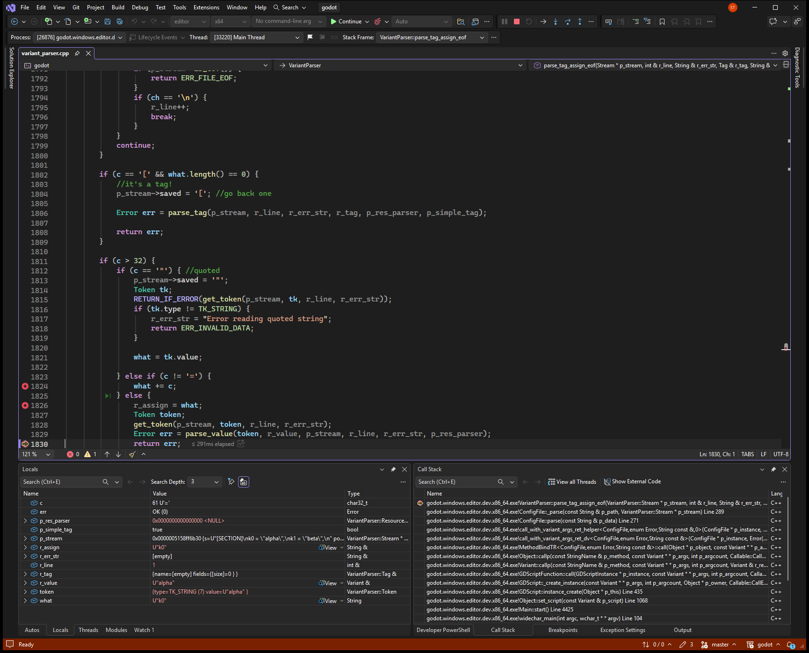
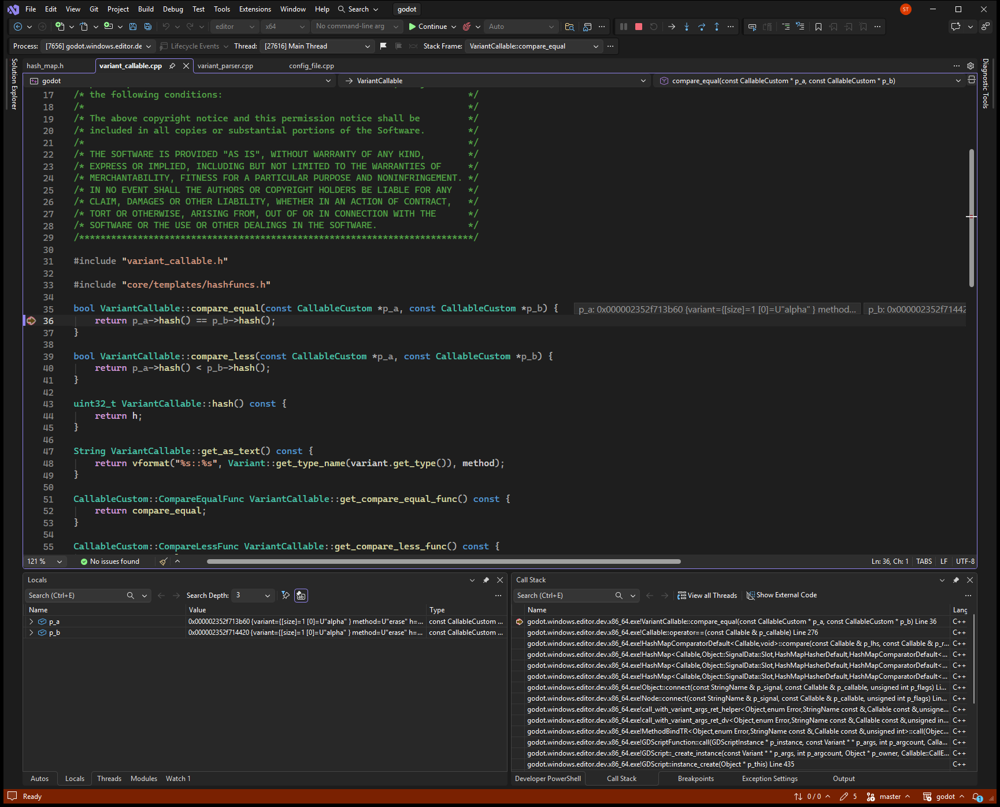
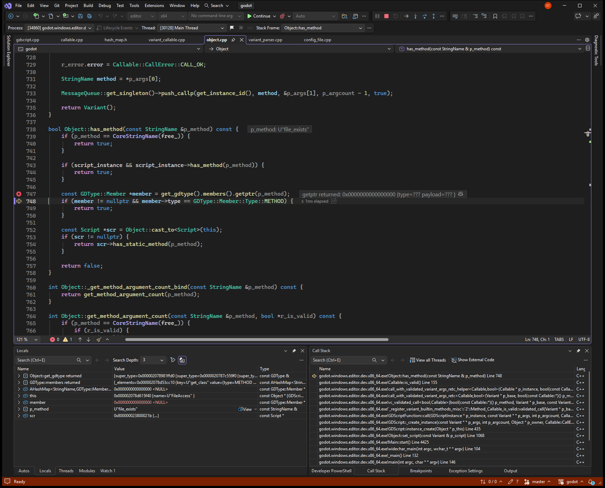
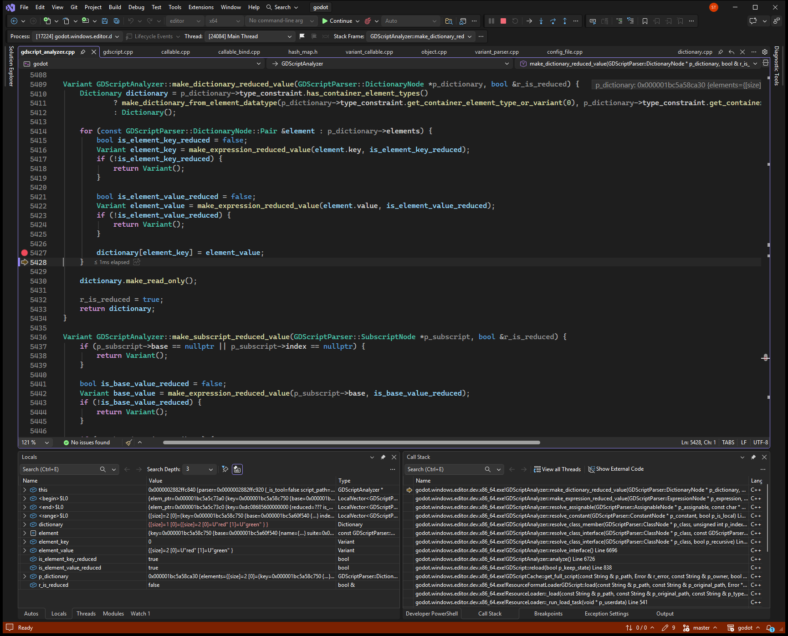
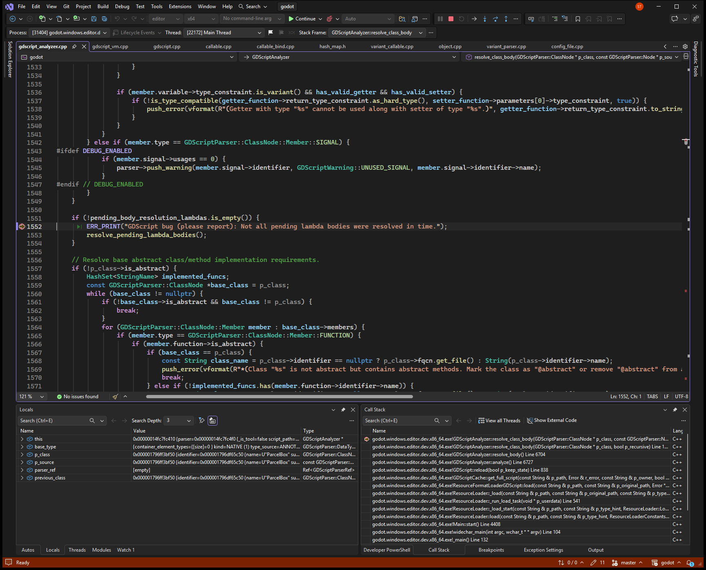

AutoDebug
AutoDebug lets an AI agent find the real root cause of a bug in your IDE's debugger, from what the program actually does, not from assumptions or a guess. Then it writes a report with the smallest fix. Nothing runs until you click Approve.
trace of line 15 for the square moved by (2, 1)
| Pass | i | total | Edge added |
|---|---|---|---|
| 1 | 0 | 0.0 → -1.0 | (2, 1) to (3, 1) |
| 2 | 1 | -1.0 → 2.0 | (3, 1) to (3, 2) |
| 3 | 2 | 2.0 → 4.0 | (3, 2) to (2, 2) |
- YouMoving a square changes its area. Find out why.
- AgentI'll run
geometry.pyin the debugger and stop on line 15. Asks you to approve - VS CodeApproved. Running to the breakpoint.
- AgentFour corners, but only three passes: the edge from (2, 2) back to (2, 1) is never added.
- Root causeLine 12:
range(len(points) - 1)stops one edge before the shape closes. Proven in the debugger - FixLoop over every point and wrap around with
points[(i + 1) % len(points)]. Report written toautodebug-reports/.
Replayed from a real session: four corners, three passes. The edge from (2, 2) back to (2, 1) is never added, so the moved square reports area 2 instead of 1.
What it is #
AI agents often guess why a bug happens. A wrong guess gives a fix that is too big, misses the bug, or adds a new one. With AutoDebug, the agent first proves the cause in the debugger, then suggests the smallest fix.
- IDEs: VS Code, Cursor and Visual Studio. More are planned.
- Agents: any agent with MCP or a terminal.
- Bug tickets: give the agent a GitHub issue or Jira ticket. It reproduces the bug, then debugs it.
Case studies #
Five open bugs from the Godot engine, each given to an AI agent as a GitHub link. The agent debugged them in Visual Studio 2026 with AutoDebug. Each video is the real session, sped up while the agent reads code. Each report is the file AutoDebug wrote, unedited.
Pick a bug
- 1
#119459ConfigFile glues trailing text onto the next keyCore, variant parser1:12 - 2
#116141Signal connect treats two different arrays as the same callableCore, callables1:10 - 3
#123848Callable.is_valid() is false for native static methodsGDScript, native classes1:15 - 4
#124061Constant Dictionary stores an Array where a PackedStringArray belongsGDScript analyzer1:13 - 5
#123766Inner-class lambda default is resolved from the outer classGDScript analyzer1:05
ConfigFile glues trailing text onto the next key
Root cause
parse_tag_assign_eof returns OK as soon as the value parses and never reads the rest of the line, so a trailing comma becomes the start of the next key.
Suggested fix
After the value, finish the line: skip spaces and comments; anything else is a parse error.
- Root cause proven in the debugger
- Agent: Grok 4.7

core/variant/variant_parser.cpp:1830Signal connect treats two different arrays as the same callable
Root cause
VariantCallable::compare_equal compares only hashes. Two different arrays with the same values hash the same, so connect thinks the signal is already connected.
Suggested fix
Compare the method and identity_compare of the bound value, not the hash.
- Root cause proven in the debugger
- Agent: Grok 4.7

core/variant/variant_callable.cpp:36Callable.is_valid() is false for native static methods
Root cause
is_valid asks has_method on GDScriptNativeClass, which only knows its own method new, so a static method like FileAccess.file_exists looks invalid.
Suggested fix
Let GDScriptNativeClass answer has_method for static ClassDB methods.
- Root cause proven in the debugger
- Agent: Grok 4.7

core/object/object.cpp:748Constant Dictionary stores an Array where a PackedStringArray belongs
Root cause
The typed slot is filled with operator[], which keeps the plain Array. Indexing it later as a PackedStringArray reads size 0 and fails.
Suggested fix
Store entries with Dictionary::set() and reject the constant if it fails.
- Root cause proven in the debugger
- Agent: Grok 4.7

modules/gdscript/gdscript_analyzer.cpp:5428Inner-class lambda default is resolved from the outer class
Root cause
The outer class checks for pending lambdas before its inner class body is resolved, so the inner lambda is still pending and GDScript reports a bug.
Suggested fix
Resolve inner class bodies before the pending-lambda check.
- Root cause proven in the debugger
- Agent: Grok 4.7

modules/gdscript/gdscript_analyzer.cpp:1552Recorded on Godot 4.8 (dev build, commit cafc17a), Windows 11 and Visual Studio 2026. The agent was Grok 4.7. The videos have no sound.
Get started #
Pick your system, the IDE you debug in and the agent you chat with. They can be different apps: for example, chat in Cursor and debug in Visual Studio.
Your steps
-
Install AutoDebug and connect everything. You need Python 3.11 or newer.
py -m pip install --upgrade autodebug py -m autodebug setup
brew install pipx pipx ensurepath pipx install autodebug autodebug setup
sudo apt install pipx pipx ensurepath pipx install autodebug autodebug setup
-
Ask the agent. For example, with the demo in
examples/; use your own launch configuration and file:
Debug safely #
- Read the Approve dialog. It shows the goal, the build, the program, the breakpoints and the limits. Approve runs exactly that, once.
- Only the dialog approves. A "yes" in the chat does nothing. Closing the dialog, Deny, or two minutes without an answer refuses.
- Don't press F5 during the agent's session. One debug session at a time.
- The agent cannot change your program. No expression evaluation and no writes to variables; values that look secret are hidden.
- Ticket text can come from anyone. The agent never runs commands from a ticket and uses made-up test data, never customer data from it. Check the arguments in the dialog.
- Use test data. What the agent reads goes to its model provider. AutoDebug itself listens on 127.0.0.1 only and collects no data.
Troubleshooting #
The agent has no autodebug tools
Start a new chat. In Cursor, Settings → Customize → MCPs must show extension-autodebug with a green dot; switch it on if it says Disabled. In Copilot, tick autodebug in the chat's tools.
Any agent can also use the same tools in its terminal: autodebug run list_targets (Windows: py -m autodebug run list_targets).
No Approve dialog appears
It opens in the IDE you debug in, not in the chat. Switch to that IDE. In Visual Studio it stays on top; it closes after 2 minutes, and the agent then reports "no answer".
"No window is running the extension"
Open the project in the IDE. VS Code and Cursor: Developer: Reload Window, then the status bar shows AutoDebug. Visual Studio: View → Output → AutoDebug says it is listening.
The agent asks which IDE to use
Several IDEs have the same launch configuration. Set yours once: autodebug setup --debug-in visualstudio (or cursor, vscode).
"pipx" or "autodebug" is not recognized
Windows: use py -m pip install --upgrade autodebug and py -m autodebug. macOS and Linux: run pipx ensurepath, then open a new terminal.
"No matching distribution found" right after a release
A new version is on PyPI, but pip reads a list that PyPI caches for up to about 10 minutes. Setup then says you are up to date, or pip cannot find the version. Wait 10 minutes and run setup again.
To install one exact version once it shows: py -m pip install --upgrade --no-cache-dir autodebug==<version>, for example autodebug==0.7.2 (macOS and Linux: pipx install --force autodebug==<version>), then py -m autodebug setup.
Visual Studio still uses the old AutoDebug extension
Setup cannot update the Visual Studio extension while Visual Studio is open; it says so and skips it. Then newer features are missing, such as screenshots and Locals or Autos at each stop, and doctor or the agent reports an outdated extension.
Close every Visual Studio window (File → Exit), run py -m autodebug setup, then open the solution again. py -m autodebug doctor no longer lists an outdated extension.
NOT_BUILT
The program has not been built yet. That is fine: the agent passes the build task it names, and the IDE builds it after you click Approve.
Commands #
| Command | Does |
|---|---|
autodebug setup | Connects every IDE and agent found, and updates AutoDebug first when a newer version is out. Close Visual Studio before you run it, so its extension updates too. --debug-in <ide> sets the IDE you debug in. |
autodebug doctor | Checks the setup, the open IDE windows and the version. |
autodebug run <tool> … | Calls a debugging tool from a terminal; run help lists them. |
On Windows, write py -m autodebug instead of autodebug.
Where to get it #
| Store | What | Status |
|---|---|---|
| PyPI | autodebug, with autodebug setup | Available |
| Open VSX | The extension for Cursor (search for AutoDebug); setup installs it too | Available |
| VS Code Marketplace | The extension for VS Code; until then, setup installs it | Planned |
| Visual Studio Marketplace | The Visual Studio extension; until then, setup installs it | Planned |